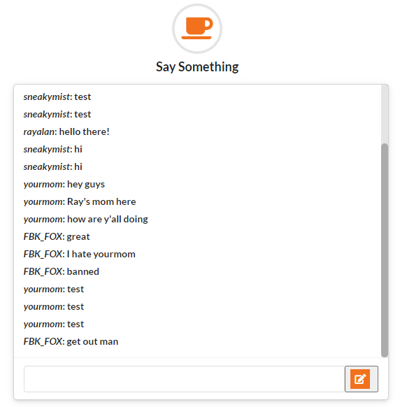

Chat with other users in real-time!
Before I use Django for my server-side framework, I first learned to use Ruby on Rails to develop my first-ever web app. My first project with Ruby on Rails is a chatroom app that allows the users to chat in real-time by using the WebSocket Protocol. This protocol facilitates a real-time, full-duplex communication between chatroom users. First an user will send their chat message to the chatroom server. After the server receives the message, it broadcasts the message to any other users who are listening. As the result, the user's message will be displayed instantly on the chatroom without the need to reload the page.
This chatroom comes with a login page, a sign-up page, and data authentication process to secure user's personal data. Please take a look at my chatroom and sign up for an account through the following link: MessageMe App
See my repository